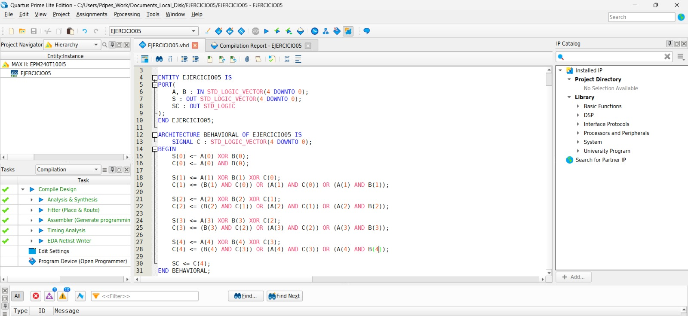
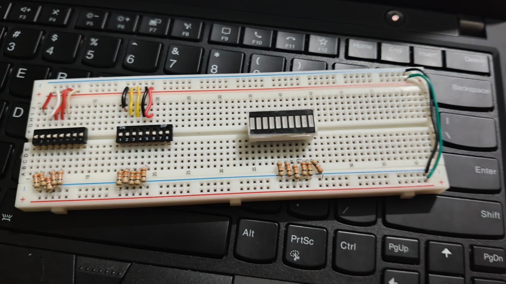
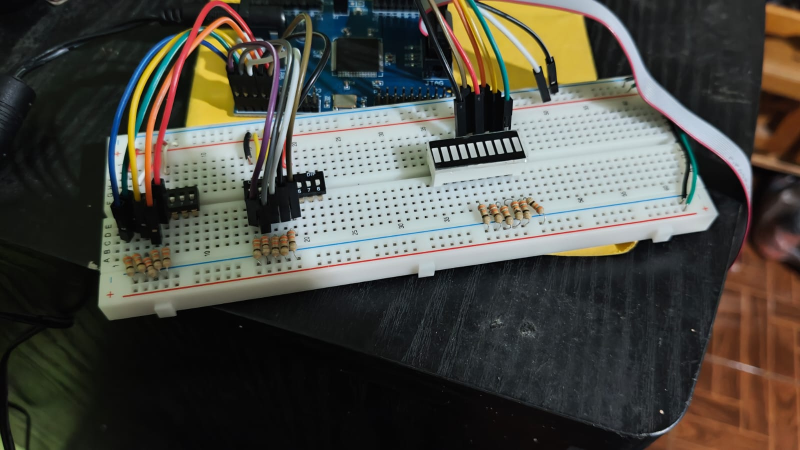
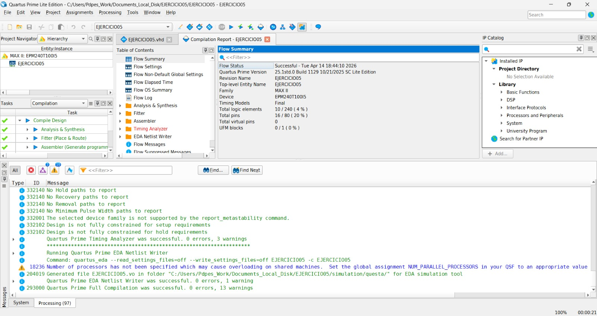
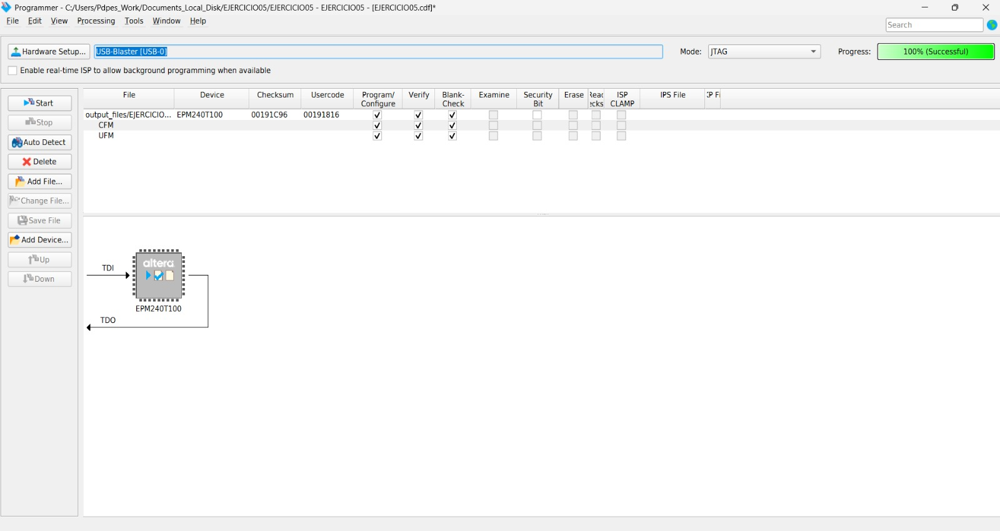
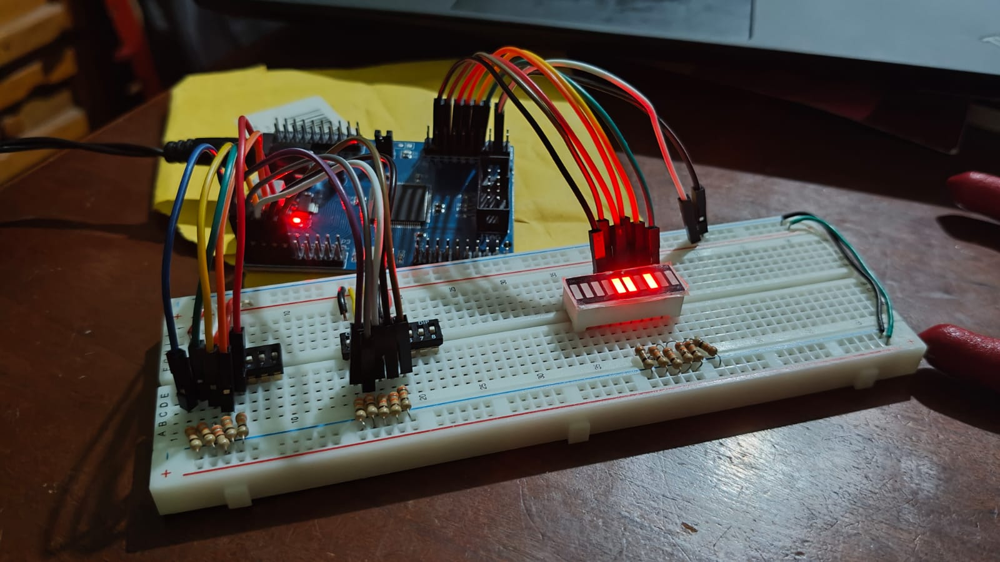
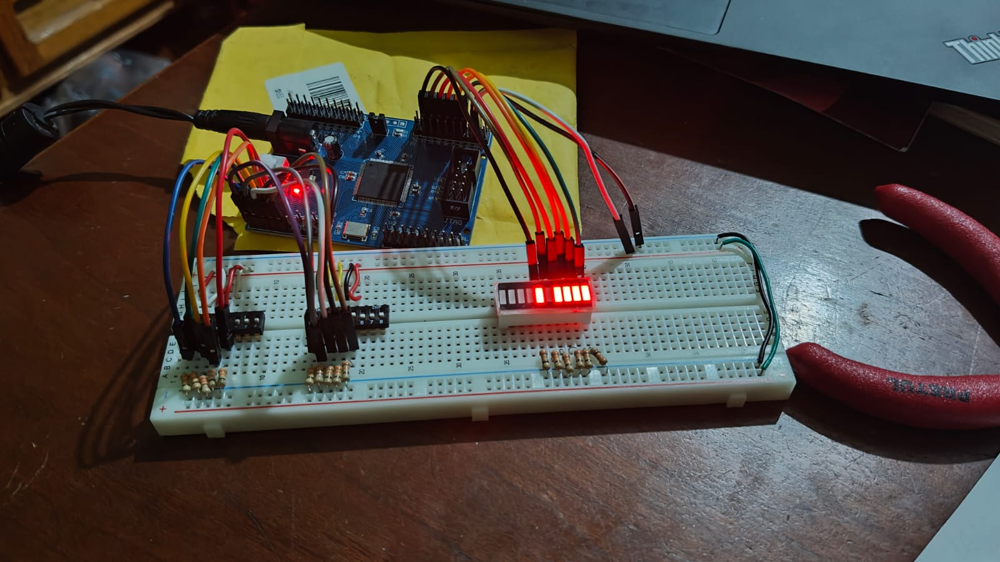
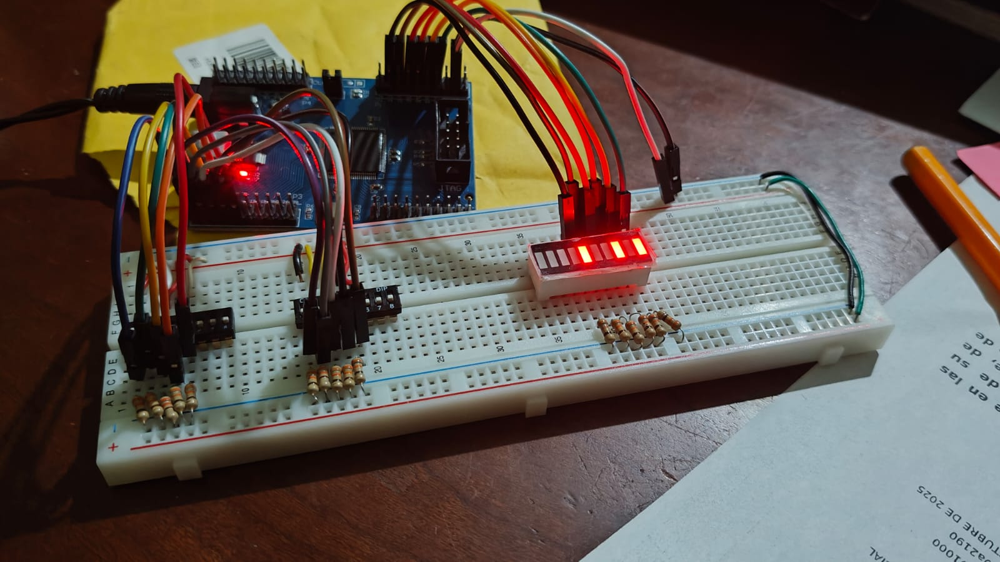

Implementación en Hardware
Los sumadores pueden implementarse utilizando compuertas lógicas, VHDL y FPGAs.
En herramientas como Quartus, se pueden diseñar, simular e implementar estos circuitos.
- Compuertas lógicas (AND, OR, XOR)
- VHDL
- FPGA / CPLD
- Quartus (diseño y simulación)
Lista de Materiales
- MAX II
- Barra de LEDs
- Resistencias
- Protoboard
- Programa Quartus
- Fuente de alimentación
- DIP switch de 9 posiciones
- Barra de 10 leds
- Cables con punta hembra-macho
Desarrollo
Comenzamos calculando el semisumador. Tenemos que:
| Ao | Bo | Co | So |
|---|---|---|---|
| 0 | 0 | 0 | 0 |
| 0 | 1 | 0 | 1 |
| 1 | 0 | 0 | 1 |
| 1 | 1 | 1 | 0 |
De esto sacamos que las ecuaciones son:
So = Ao ⊕ Bo
Co = AoBo
Continuamos calculando el primer sumador. Tenemos que:
| A1 | B1 | Co | C1 | S1 |
|---|---|---|---|---|
| 0 | 0 | 0 | 0 | 0 |
| 0 | 0 | 1 | 0 | 1 |
| 0 | 1 | 0 | 0 | 1 |
| 0 | 1 | 1 | 1 | 0 |
| 1 | 0 | 0 | 0 | 1 |
| 1 | 0 | 1 | 1 | 0 |
| 1 | 1 | 0 | 1 | 0 |
| 1 | 1 | 1 | 1 | 1 |
De esto sacamos que las ecuaciones son:
S1 = A1 ⊕ B1 ⊕ C1
C1 = B1Co + A1Co + A1B1
Continuamos calculando el segundo sumador. Tenemos que:
| A2 | B2 | C1 | C2 | S2 |
|---|---|---|---|---|
| 0 | 0 | 0 | 0 | 0 |
| 0 | 0 | 1 | 0 | 1 |
| 0 | 1 | 0 | 0 | 1 |
| 0 | 1 | 1 | 1 | 0 |
| 1 | 0 | 0 | 0 | 1 |
| 1 | 0 | 1 | 1 | 0 |
| 1 | 1 | 0 | 1 | 0 |
| 1 | 1 | 1 | 1 | 1 |
De esto sacamos que las ecuaciones son:
S2 = A2 ⊕ B2 ⊕ C2
C2 = B2C1 + A2C1 + A2B2
Como los sumadores repiten el mismo patrón, no es necesario terminar de hacerlo, simplemente cambiamos el nombre de las variables.
Debido a esto podemos obtener todas las ecuaciones, las cuales son:
So = Ao ⊕ Bo
S1 = A1 ⊕ B1 ⊕ C1
C1 = B1Co + A1Co + A1B1
S2 = A2 ⊕ B2 ⊕ C2
C2 = B2C1 + A2C1 + A2B2
S3 = A3 ⊕ B3 ⊕ C3
C3 = B3C2 + A3C2 + A3B3
S4 = A4 ⊕ B4 ⊕ C4
C4 = B4C3 + A4C3 + A4B4
Una vez obtenidas todas las ecuaciones, podemos pasar a Quartus.
Aquí, crearemos un nuevo proyecto y escribimos el código.

Armamos la protoboard.

Conectamos la placa.

Compilamos el código y lo subimos a la placa.


Hacemos pruebas para ver si el código se subió correctamente.



Conclusión
En esta práctica se llevó a cabo el diseño e implementación de un sumador de 5 bits, el cual permite realizar la suma de dos números binarios de manera eficiente. Se observó que, al operar con números de 5 bits, el resultado puede generar un acarreo adicional, por lo que la salida final se expresa en 6 bits para representar correctamente el resultado sin pérdida de información. Asimismo, se logró comprender el funcionamiento de los sumadores binarios, así como la importancia del bit de acarreo en operaciones digitales. Durante el desarrollo, se reforzaron conceptos relacionados con lógica digital, como el uso de compuertas lógicas y la propagación del acarreo entre etapas. Finalmente, se concluye que este tipo de circuitos constituye una base fundamental en sistemas digitales más complejos, ya que permiten la realización de operaciones aritméticas esenciales dentro de procesadores y otros dispositivos electrónicos.